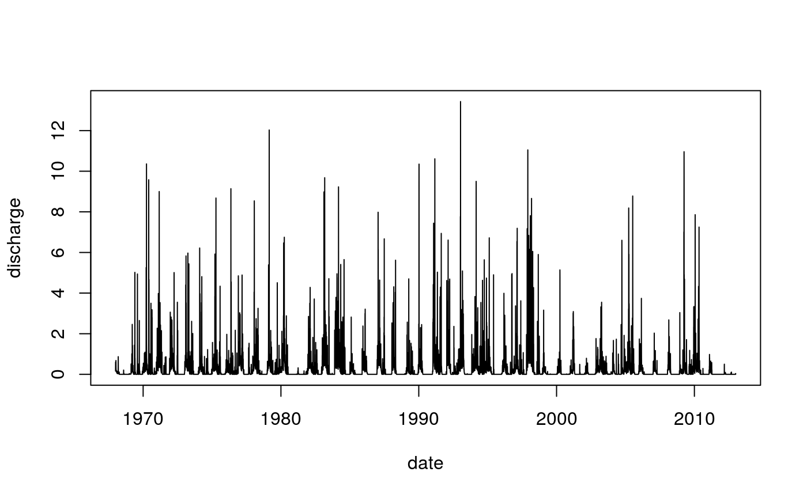
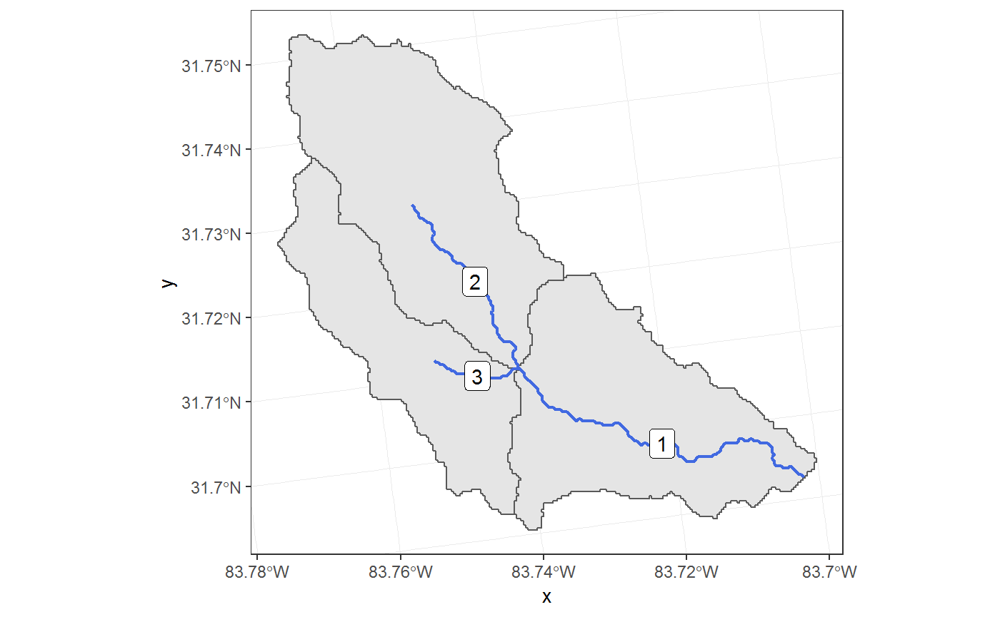
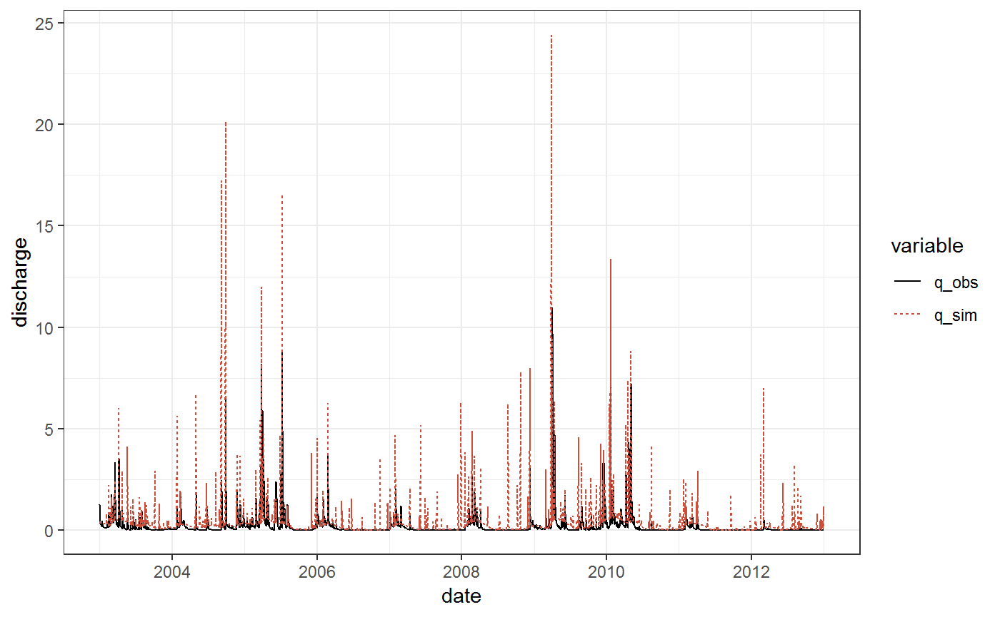

The R package SWATdata provides a set of fast running, lightweight SWAT2012 and SWAT+ model setups of a head watershed of the Little River Experimental Watershed (LREW; Bosch et al., 2007). Additionally, discharge observations at the outlet of the demo catchment (Gauge J of LREW) and spatial information of the SWAT model setups are available from SWATdata. An overview of the available data sets is available on the SWATdata GitHub page.
The demo data that is available from SWATdata can be loaded with the function load_demo(). Loading an entire SWAT project to your hard drive requires the information that the loaded dataset is a 'project'. As the project will be written to the hard drive a path is required. Further, the SWAT version must be provided, to either load a SWAT+ ('plus'), or a SWAT2012 ('2012') project. Optionally, the revision number can be provided if a specific model revision (only for SWAT+) should be loaded. An overview of the different SWAT demo project setups (with their revision numbers) is available at the SWATdata GitHub page. If no revision number is provided, a project with the most recent revision number available fom SWATdata is loaded. A demo project can be loaded with the following command:
# The path where the SWAT demo project will be written
demo_path <- "Define:/your/path"
# Loading a SWAT+ demo project
path_plus <- load_demo(dataset = "project",
version = "plus",
path = demo_path,
revision = 57)
# Loading a SWAT2012 demo project
path_2012 <- load_demo(dataset = "project",
version = "2012",
path = demo_path)Here load_demo() loads a demo project data set and saves it in the defined demo_path. Additionally, the function returns the final demo project path (path_plus and path_2012) as a character string back to R. This path can be directly used to run the SWAT model located in that path.
SWATplusR also provides observation data of daily discharge records at the main outlet of the demo catchment (Gauge J of LREW) for the time period 1968-01-01 until 2012-12-31. The data set is useful for the model evaluation of a demo project. You can load the observation data as follows:
q_obs <- load_demo(dataset = "observation")
q_obs
#> # A tibble: 16,437 x 2
#> date discharge
#> <date> <dbl>
#> 1 1968-01-01 0.16
#> 2 1968-01-02 0.570
#> 3 1968-01-03 0.61
#> 4 1968-01-04 0.37
#> 5 1968-01-05 0.25
#> 6 1968-01-06 0.2
#> 7 1968-01-07 0.21
#> 8 1968-01-08 0.22
#> 9 1968-01-09 0.18
#> 10 1968-01-10 0.34
#> # … with 16,427 more rowsA quick plot of the observation data set:
plot(q_obs, type = "l")
To visualize simulation results spatially, shape files of the subbasins, river network, and HRUs for the SWAT+ and the SWAT2012 demo setups are available from SWATplusR. For spatial data load_demo() only returns the paths to the shape files. As the spatial data for the two SWAT project setups looks different loading the data requires the definition of the SWAT version.
# Path to the subbasin shape file
sub_path <- load_demo(dataset = "subbasin", version = "plus")
# Path to the subbasin shape file
riv_path <- load_demo(dataset = "river", version = "plus")
sub_path
#> [1] "/home/christoph/R/x86_64-pc-linux-gnu-library/3.6/SWATdata/extdata/plus_shapes/sub.shp"These paths you can use to load the spatial data with your preferred method. The package sf (Pebesma, 2018; Pebesma et al., 2018) provides a very elegant way to work with spatial vector objects in R that have a direct integration for plotting in ggplot2 (Wickham, 2016).
# Loading the sf and ggplot2 packages for the visualization
library(sf)
#> Linking to GEOS 3.6.2, GDAL 2.2.3, PROJ 4.9.3
library(ggplot2)
#> Registered S3 methods overwritten by 'ggplot2':
#> method from
#> [.quosures rlang
#> c.quosures rlang
#> print.quosures rlang
# Loading the spatial data as simple features
sub <- read_sf(sub_path)
riv <- read_sf(riv_path)
ggplot() +
geom_sf(data = sub) +
geom_sf(data = riv, col = "royalblue", lwd = 0.75) +
geom_sf_label(data = riv, aes(label = Channel)) +
theme_bw()
SWAT projects (e.g. one of the demo projects) can be executed from R with the functions run_swat2012() to run a SWAT2012 project or run_swatplus() to run a SWAT+ project. The minimum requirements to execute a SWAT project are to provide the project_path to the project folder on the hard drive and to define the simulation outputs that the simulation should return to R. The definition of the simulation output always follows a simple pattern. An output variable that should be returned must be defined using the function define_output(). Below is a simple example to run a SWAT+ project and return the variable = 'flo_out' that is written into the file = 'channel' file for the spatial unit = 1. Caution in the demo SWAT+ model setup the main channel is channel number 1.
q_sim_plus <- run_swatplus(project_path = path_plus,
output = define_output(file = "channel",
variable = "flo_out",
unit = 1))
#> Building 1 thread in 'Define:/your/path/swatplus_demo/.model_run':
#> Thread 1 of 1 Time elapsed: 0S Time remaining: 0S
#> Completed 1 thread in 0S
#> Performing 1 simulation on 1 core:
#> Simulation 1 of 1 Time elapsed: 3S Time remaining: 0S
#> Completed 1 simulation in 3SThe syntax definition of simulations outputs applies to SWAT+ and SWAT2012. The only difference between the two models in the output definition is how to correctly address the output variables. The output files are organized in different ways in SWAT+ and SWAT2012. Below you find an example to extract the simulation outputs of discharge at all three subbasin outlets in the SWAT2012 demo setup:
q_sim_2012 <- run_swat2012(project_path = path_2012,
output = define_output(file = "rch",
variable = "FLOW_OUT",
unit = 1:3))
#> Building 1 thread in 'Define:/your/path/swat2012_demo/.model_run':
#> Thread 1 of 1 Time elapsed: 3S Time remaining: 0S
#> Completed 1 thread in 3S
#> Performing 1 simulation on 1 core:
#> Simulation 1 of 1 Time elapsed: 4S Time remaining: 0S
#> Completed 1 simulation in 4SThe discharge in SWAT2012 is written in to the file “output.rch”. The discharge leaving a subbasin is written in the column “FLOW_OUT”. The only additional difference in running a basic simulation with SWAT+ and SWAT2012 is the different function call (run_swatplus() or run_swat2012()).
You might have noticed, that running SWAT also provides information on the progress. This is very convenient for long simulation runs with many model evaluations. If you implement the SWAT function into other function calls the writing to the console can be an undesired behavior. You can quiet the function call with the argument quiet = TRUE.
The previous examples illustrated how to extract one variable (but maybe for several units) from the simulation outputs. To extract several variables you can simply combine them in a list(). In the example below we extract several water balance components of the SWAT+ demo simulations. Aggregated variables for a SWAT+ simulation are written to the ‘basin_wb’ file and there is only one spatial unit (the entire basin) written to that file. Therefore, the unit must be 1. Values different from 1 will not return any simulation results:
wb_sim <- run_swatplus(project_path = path_plus,
output = list(precip = define_output(file = "basin_wb",
variable = "precip",
unit = 1),
q_sur = define_output(file = "basin_wb",
variable = "surq_gen",
unit = 1),
q_lat = define_output(file = "basin_wb",
variable = "latq",
unit = 1),
eta = define_output(file = "basin_wb",
variable = "et",
unit = 1)))
#> Building 1 thread in 'Define:/your/path/swatplus_demo/.model_run':
#> Thread 1 of 1 Time elapsed: 1S Time remaining: 0S
#> Completed 1 thread in 1S
#> Performing 1 simulation on 1 core:
#> Simulation 1 of 1 Time elapsed: 2S Time remaining: 0S
#> Completed 1 simulation in 2SThe output definition in a list has the additional advantage to optionally assign individual names to the variables (e.g. list(name_a = define_output(...))). The variables are returned in the output with that name in R then.
The goal of SWATplusR is to return the SWAT simulations in a tidy format. The simulation results look slightly different if only one simulation was performed, parameters were modified in a run, or multiple parameter sets were used to perform a large number of model evaluations. In general the outputs follow a general structure.
If only one simulation was performed, where no model parameters were modified, run_swat*() returns a tibble (Müller and Wickham, 2019) with a date column and the columns with the simulated values of the extracted variables. The output table of the simulated water balance components has a date column and columns with the four extracted water balance components. The variable names are the individual names that we defined in the output definition:
wb_sim
#> # A tibble: 3,653 x 5
#> date precip q_sur q_lat eta
#> <date> <dbl> <dbl> <dbl> <dbl>
#> 1 2003-01-01 4.28 0.144 2.28 0.425
#> 2 2003-01-02 0.387 0.021 1.68 0.951
#> 3 2003-01-03 0 0.005 1.34 0.081
#> 4 2003-01-04 0 0.001 1.15 0.742
#> 5 2003-01-05 0 0 1.03 0.7
#> 6 2003-01-06 0 0 0.962 0.676
#> 7 2003-01-07 0 0 0.912 0.574
#> 8 2003-01-08 0 0 0.874 0.628
#> 9 2003-01-09 0 0 0.844 0.716
#> 10 2003-01-10 0 0 0.817 0.423
#> # … with 3,643 more rowsIn case no variable name is assigned in the output definition (as in the simulations of the discharge above), the variable name of the extracted variable is used as the variable name. When several units are defined in define_output() (e.g. in the example above unit = 1:3) a column in the output table is created for each unit and the unit number is added to the variable name. This is the case for the the simulation of ‘FLOW_OUT’ in the example above:
q_sim_2012
#> # A tibble: 3,653 x 4
#> date FLOW_OUT_1 FLOW_OUT_2 FLOW_OUT_3
#> <date> <dbl> <dbl> <dbl>
#> 1 2003-01-01 0.174 0.103 0.413
#> 2 2003-01-02 0.154 0.0956 0.377
#> 3 2003-01-03 0.150 0.0935 0.369
#> 4 2003-01-04 0.148 0.0921 0.363
#> 5 2003-01-05 0.146 0.0912 0.359
#> 6 2003-01-06 0.145 0.0906 0.357
#> 7 2003-01-07 0.144 0.0901 0.355
#> 8 2003-01-08 0.144 0.0897 0.354
#> 9 2003-01-09 0.143 0.0894 0.353
#> 10 2003-01-10 0.143 0.0890 0.352
#> # … with 3,643 more rowsThe tidy writing of the simulation results allows an easy processing of the data in the analysis workflow in R. Here is a quick example how to ‘wrangle’ the simulated discharge data with dplyr (Wickham et al., 2019) and tidyr (Wickham and Henry, 2018) and plotting it with ggplot2:
library(tidyr)
library(dplyr)
library(ggplot2)
q_plot <- q_sim_2012 %>%
select(date, FLOW_OUT_3) %>%
rename(q_sim = FLOW_OUT_3) %>%
left_join(., q_obs, by = "date") %>%
rename(q_obs = discharge) %>%
gather(., key = "variable", value = "discharge", -date)
ggplot(data = q_plot) +
geom_line(aes(x = date, y = discharge, col = variable, lty = variable)) +
scale_color_manual(values = c("black", "tomato3")) +
theme_bw()
The capability to alter model parameters in a SWAT simulation is an essential option in SWATplusR. Model parameters can be modified in a SWAT simulation by passing the respective parameters with the argument parameter in run_swat*(). A single parameter set can be provided as a vector. Many parameter sets that should be used in simulations have to be provided in a tibble.
To modify a model parameter information on the type of change (relative, absolute change etc.), the extent of the change (e.g. all or selected subbasins/land uses/ soil types etc.) and the magnitude of change are required. In SWATplusR most of that information is passed with the variable name. Thus, the variable names use a very specific syntax. A parameter name can consist of several parts, where some are required and others are optional. The minimum requirements for the elements of a parameter name are the actual name of the parameter in the model an the type of change. Options for the type of change are ‘relchg’ and ‘pctchg’ to alter a parameter by a fraction or a percentage of the initial parameter value, “abschg” to add an absolute value to the initial parameter value, or “absval” to replace a parameter by an absolute value. In the example below the parameter curve number (‘cn2’) that is defined on HRU level will be increased by the absolute value 5 in all HRUs.
par_mod <- c("cn2.hru|change = abschg" = 5)Many options to constrain a parameter change are available in SWATplusR (in the current version of SWATplusR only for SWAT2012). Constraints for the alteration of a parameter is added with a ‘|’ and a logical expression. Below you find an example for the change of the curve number ‘CN2’ in a SWAT2012 setup, that is only effective for the subbasins 1 to 5 and only for the land uses “WWHT” and “CORN”. Also take care that ‘CN2’ is a parameter of the ‘.mgt’ input file:
par_mod <- c("CN2.mgt|change = abschg | sub == 1:5 | luse %in% c('WWHT', 'CORN') " = 5)Individual parameter names can be assigned with the :: operator. At the beginning of a parameter definition the individual parameter name is provided followed by ‘::’ and the actual parameter definition:
par_mod <- c("my_name::cn2.hru|change = abschg" = 5)To define single parameter set a named vector is generated. The names define the parameters the type of change. Below a single parameter set is generated where all ‘cn2’ values in a SWAT+ model setup are reduced by 5 percent and the ‘alpha.gw’ value was set to 0.5 globally.
par_single <- c("cn2.hru|change = pctchg" = - 5,
"alpha.gw|change = absval" = 0.5)To include the parameter changes in the SWAT+ model execution the defined vector is simply passed with the argument parameter in the run_swatplus() function call:
q_sim <- run_swatplus(project_path = path_plus,
output = define_output(file = "channel",
variable = "flo_out",
unit = 1),
parameter = par_single)
#> Building 1 thread in 'Define:/your/path/swatplus_demo/.model_run':
#> Thread 1 of 1 Time elapsed: 1S Time remaining: 0S
#> Completed 1 thread in 1S
#> Performing 1 simulation on 1 core:
#> Simulation 1 of 1 Time elapsed: 2S Time remaining: 0S
#> Completed 1 simulation in 2SThe same workflow works with several parameter sets when they are defined in a tibble. The example below uses the same parameters as above, but in this case a tibble was defined with 8 random realizations for each parameter within the defined boundaries.
par_set <- tibble("cn2.hru|change = abschg" = runif(8,-15,10),
"alpha.gw|change = absval" = runif(8, 0, 1))
par_setThe implementation in the run_swat*() function works the same way. To execute multiple SWAT simulations with many parameter sets the SWATplusR package provides an option parallel computing. To perform a parallel model execution the number of parallel threads is defined with the input argument n_thread.
q_sim <- run_swatplus(project_path = path_plus,
output = list(q_sur = define_output(file = "basin_wb",
variable = "surq_gen",
unit = 1),
q_lat = define_output(file = "basin_wb",
variable = "latq",
unit = 1)),
parameter = par_set,
n_thread = 4)
#> Building 4 threads in 'Define:/your/path/swatplus_demo/.model_run':
#> Thread 2 of 4 Time elapsed: 1S Time remaining: 1S
#> Completed 4 thread in 2S
#> Performing 8 simulations on 4 cores:
#> Simulation 4 of 8 Time elapsed: 4S Time remaining: 4S
#> Completed 8 simulations in 11SWhen parameters were altered in a simulation run, the performed parameter changes are saved in the simulation outputs by default. As a consequence, the entire simulation output cannot be provided in a single tibble anymore and will be returned as a list with two main list entries. output$parameter provides all information on the parameter changes that were performed in the simulation runs. output$simulation provides the simulation results. The outputs of the previous model execution of the SWAT+ demo project has the following structure
The list entry $parameter holds two tibbles. The first tibble shows the values of the parameter changes of each model evaluation that was performed with run_swat*(). Each row of the tibble represents a parameter set that was used in a model run. The second tibble provides information on the parameter names, their actual names in the model, the type of change and the constraints on the parameter:
q_sim$parameter
#> $values
#> # A tibble: 8 x 2
#> cn2 alpha
#> <dbl> <dbl>
#> 1 0.360 0.401
#> 2 -11.3 0.151
#> 3 -11.1 0.752
#> 4 -5.67 0.608
#> 5 -9.94 0.590
#> 6 8.37 0.571
#> 7 4.52 0.408
#> 8 0.0230 0.115
#>
#> $definition
#> # A tibble: 2 x 4
#> par_name parameter file_name change
#> <chr> <chr> <chr> <chr>
#> 1 cn2 cn2 hru abschg
#> 2 alpha alpha gw absvalThe list entry $simulation provides the simulation runs that corresponds to each parameter set. Different to the single simulation without parameter changes is that now the simulated variables are not saved in a single tibble, but as a list of tibbles. In this case each simulated variable is saved in one tibble, where the first column of each tibble is the ‘date’ and the other columns are the individual simulation runs. Now the tibbles are named by the variables and each individual run saved in the tibbles is named ‘run_1’ to run ‘run_n’. In the example two variables were simulated, q_out$simulation$q_sur and q_out$simulation$q_lat. Each tibble holds the date and the runs 1 to 8:
q_sim$simulation
#> $q_sur
#> # A tibble: 3,653 x 9
#> date run_1 run_2 run_3 run_4 run_5 run_6 run_7 run_8
#> <date> <dbl> <dbl> <dbl> <dbl> <dbl> <dbl> <dbl> <dbl>
#> 1 2003-01-01 0.149 0.023 0.024 0.059 0.029 0.335 0.221 0.144
#> 2 2003-01-02 0.022 0.003 0.003 0.009 0.004 0.053 0.035 0.021
#> 3 2003-01-03 0.005 0.001 0.001 0.002 0.001 0.013 0.008 0.005
#> 4 2003-01-04 0.001 0 0 0.001 0 0.003 0.002 0.001
#> 5 2003-01-05 0 0 0 0 0 0.001 0.001 0
#> 6 2003-01-06 0 0 0 0 0 0 0 0
#> 7 2003-01-07 0 0 0 0 0 0 0 0
#> 8 2003-01-08 0 0 0 0 0 0 0 0
#> 9 2003-01-09 0 0 0 0 0 0 0 0
#> 10 2003-01-10 0 0 0 0 0 0 0 0
#> # … with 3,643 more rows
#>
#> $q_lat
#> # A tibble: 3,653 x 9
#> date run_1 run_2 run_3 run_4 run_5 run_6 run_7 run_8
#> <date> <dbl> <dbl> <dbl> <dbl> <dbl> <dbl> <dbl> <dbl>
#> 1 2003-01-01 2.27 2.52 2.52 2.44 2.51 1.81 2.06 2.28
#> 2 2003-01-02 1.67 1.9 1.90 1.82 1.89 1.32 1.51 1.68
#> 3 2003-01-03 1.34 1.54 1.54 1.47 1.53 1.05 1.21 1.34
#> 4 2003-01-04 1.14 1.32 1.32 1.26 1.31 0.894 1.03 1.15
#> 5 2003-01-05 1.03 1.19 1.19 1.13 1.18 0.802 0.931 1.03
#> 6 2003-01-06 0.956 1.10 1.10 1.05 1.10 0.744 0.866 0.961
#> 7 2003-01-07 0.906 1.04 1.04 0.994 1.03 0.704 0.822 0.911
#> 8 2003-01-08 0.869 0.995 0.994 0.952 0.988 0.675 0.788 0.874
#> 9 2003-01-09 0.838 0.957 0.956 0.917 0.95 0.651 0.761 0.843
#> 10 2003-01-10 0.812 0.925 0.925 0.888 0.919 0.63 0.737 0.817
#> # … with 3,643 more rowsIn many cases it is advantageous to save the simulations incrementally after each model evaluation, for instance when long simulation runs would be lost if the computer or the R instance crashes, or when the simulation results cannot be stored in the RAM storage at all.
Simulations can be saved incrementally in an SQLite data base on the local hard drive, by passing a name for the save folder with the argument save_file in run_swat*(). By default the data base with the name save_file is saved in the project folder. An individual path for the save_file can be defined with the argument save_path. In case the simulations should be only saved in the data base and not returned back to R, the argument return_output = FALSE has to be set.
These arguments are simply added to the run_swatplus() function call to save the simulations in a data base instead of returning them back to R. Below the arguments are added to the previous simulation:
run_swatplus(project_path = path_plus,
output = list(q_sur = define_output(file = "basin_wb",
variable = "surq_gen",
unit = 1),
q_lat = define_output(file = "basin_wb",
variable = "latq",
unit = 1)),
parameter = par_set,
n_thread = 4,
save_file = "q_sur_lat",
return_output = FALSE)
#> Building 4 threads in 'Define:/your/path/swatplus_demo/.model_run':
#> Thread 2 of 4 Time elapsed: 1S Time remaining: 1S
#> Completed 4 thread in 2S
#> Performing 8 simulations on 4 cores:
#> Simulation 4 of 8 Time elapsed: 3S Time remaining: 3S
#> Completed 8 simulations in 8SYou can see that the function did not return any results in R but generated a folder that we called “q_sur_lat” passed by the argument save_file in the project folder. That folder now contains several data bases. The first data base is called “par_dat.sqlite” and stores the parameter information and the date vector. Further, each of the parallel threads of the simulation generated a data base where each thread wrote the simulation results (This is necessary to avoid access conflicts when writing to data bases in parallel). The simulation data bases are always called “sim_thread_i.sqlite”, where “i” are the indexes of the individual threads (1 to 4 in this case).
SWATplusR provides two options to access the saved simulations. Loading large data bases into the R environment can take a long time. If you only want to know the the content of saved simulations (e.g. to check the successful simulation runs after a crash) you can scan the saved runs with the function scan_swat_run(). The function writes meta information on the saved SWAT simulations into the console. The function returns the following for our saved runs:
# Set the path to the folder where the date bases were saved
path_saved_q <- "Path:/to/the/folder/q_sur_lat"
scan_swat_run(save_dir = path_saved_q)
#> Simulation period:
#> 2003-01-01 to 2012-12-31
#>
#> Simulated variables:
#> q_lat: runs 1 to 8
#> q_sur: runs 1 to 8
#>
#> Parameter set:
#> # A tibble: 8 x 2
#> cn2 alpha
#> <dbl> <dbl>
#> 1 0.360 0.401
#> 2 -11.3 0.151
#> 3 -11.1 0.752
#> 4 -5.67 0.608
#> 5 -9.94 0.590
#> 6 8.37 0.571
#> 7 4.52 0.408
#> 8 0.0230 0.115
#> # A tibble: 2 x 4
#> par_name parameter file_name change
#> <chr> <chr> <chr> <chr>
#> 1 cn2 cn2 hru abschg
#> 2 alpha alpha gw absvalscan_swat_run() returns information on the simulation period, which output variables were saved and which simulation runs were executed for these variables. Further, information on the used model parameter sets is written.
With load_swat_run() you can then load the simulations saved in the data bases. In case the entire set of simulations cannot be loaded in to the RAM storage the function provides the option to only load parts of the saved simulations. In the example below for example we load only the variable “q_lat” and only the first three runs into R:
q_subset <- load_swat_run(save_dir = path_saved_q,
variable = "q_lat",
run = 1:3)q_subset
#> $parameter
#> $parameter$values
#> # A tibble: 8 x 2
#> cn2 alpha
#> <dbl> <dbl>
#> 1 0.360 0.401
#> 2 -11.3 0.151
#> 3 -11.1 0.752
#> 4 -5.67 0.608
#> 5 -9.94 0.590
#> 6 8.37 0.571
#> 7 4.52 0.408
#> 8 0.0230 0.115
#>
#> $parameter$definition
#> # A tibble: 2 x 4
#> par_name parameter file_name change
#> <chr> <chr> <chr> <chr>
#> 1 cn2 cn2 hru abschg
#> 2 alpha alpha gw absval
#>
#>
#> $simulation
#> $simulation$q_lat
#> # A tibble: 3,653 x 4
#> date run_1 run_2 run_3
#> <dttm> <dbl> <dbl> <dbl>
#> 1 2003-01-01 00:00:00 2.27 2.52 2.52
#> 2 2003-01-02 00:00:00 1.67 1.9 1.90
#> 3 2003-01-03 00:00:00 1.34 1.54 1.54
#> 4 2003-01-04 00:00:00 1.14 1.32 1.32
#> 5 2003-01-05 00:00:00 1.03 1.19 1.19
#> 6 2003-01-06 00:00:00 0.956 1.10 1.10
#> 7 2003-01-07 00:00:00 0.906 1.04 1.04
#> 8 2003-01-08 00:00:00 0.869 0.995 0.994
#> 9 2003-01-09 00:00:00 0.838 0.957 0.956
#> 10 2003-01-10 00:00:00 0.812 0.925 0.925
#> # … with 3,643 more rowsSWATplusR input argumentsThe functions run_swat2012() and run_swatplus() have many further input arguments that allow to control important settings of a SWAT simulation. Here I will just mention a few of the essential ones. A detailed overview of the input arguments is provided in the respective function documentations. The simulation period can be controlled with the arguments start_date and end_date. The format writing the outputs of the simulations in the SWAT project folder is controlled by the arguments output_interval to define whether the simulations are written with daily, monthly or yearly time steps, years_skip to define the simulated years that should be skipped for writing the simulation outputs. With the argument run_index a subset of the provided parameter combinations can be simulated. This is useful, when for instance distributing the simulations on multiple computers, or when continuing the simulations after a crash.
Bosch, D. D., Sheridan, J. M., Lowrance, R. R., Hubbard, R. K., Strickland, T. C., Feyereisen, G. W. and Sullivan, D. G.: Little river experimental watershed database, Water Resources Research, 43(9), doi:10.1029/2006wr005844, 2007.
Müller, K. and Wickham, H.: Tibble: Simple data frames. [online] Available from: https://CRAN.R-project.org/package=tibble (Accessed 5 March 2019), 2019.
Pebesma, E.: Simple Features for R: Standardized Support for Spatial Vector Data, The R Journal, 10(1), 439–446, doi:10.32614/RJ-2018-009, 2018.
Pebesma, E., Bivand, R., Racine, E., Sumner, M., Cook, I., Keitt, T., Lovelace, R., Wickham, H., Ooms, J., Müller, K. and Pedersen, T. L.: sf: Simple Features for R. [online] Available from: https://CRAN.R-project.org/package=sf (Accessed 5 March 2019), 2018.
Wickham, H.: ggplot2: Elegant Graphics for Data Analysis, Springer-Verlag New York. [online] Available from: http://ggplot2.org, 2016.
Wickham, H. and Henry, L.: Tidyr: Easily tidy data with ’spread()’ and ’gather()’ functions. [online] Available from: https://CRAN.R-project.org/package=tidyr (Accessed 3 May 2019), 2018.
Wickham, H., François, R., Henry, L. and Müller, K.: Dplyr: A grammar of data manipulation. [online] Available from: https://CRAN.R-project.org/package=dplyr (Accessed 5 March 2019), 2019.